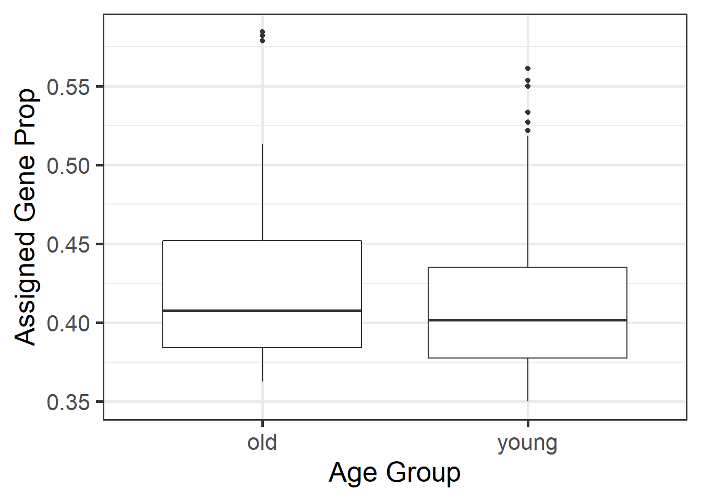
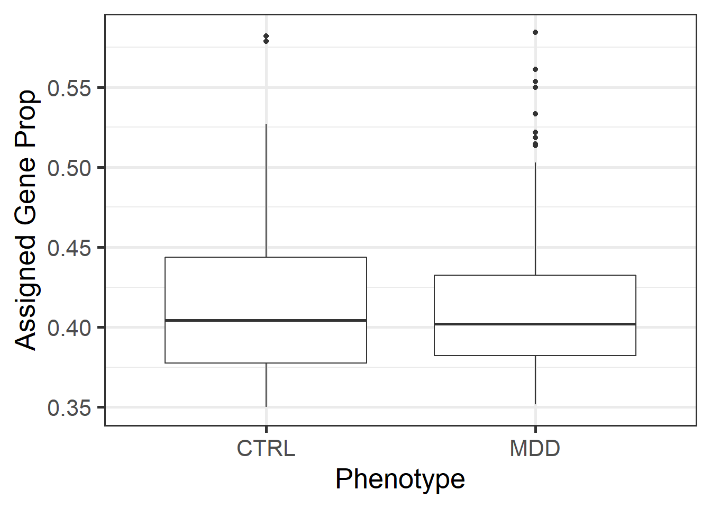
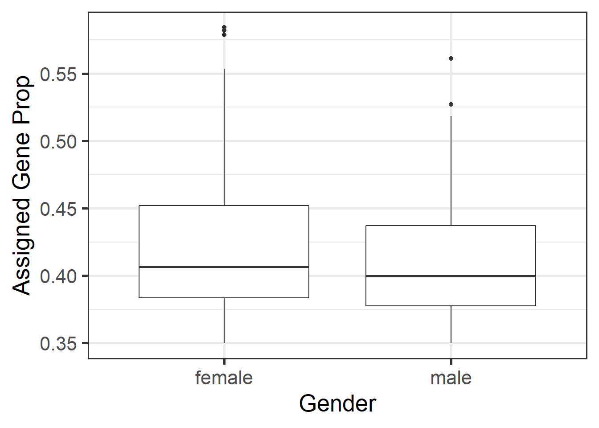
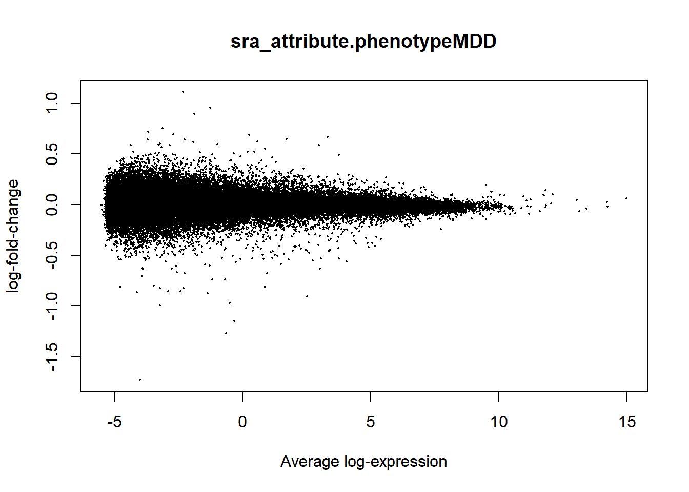
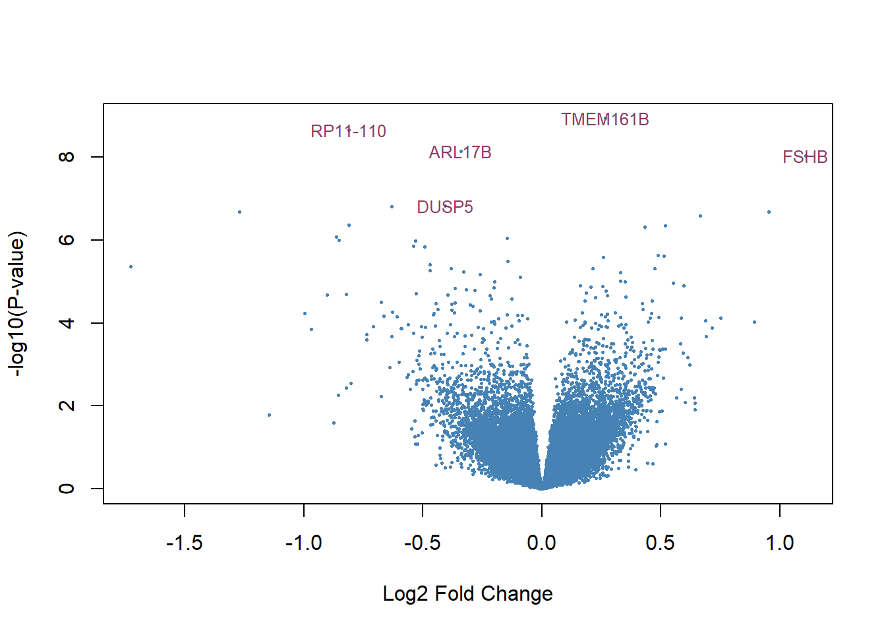
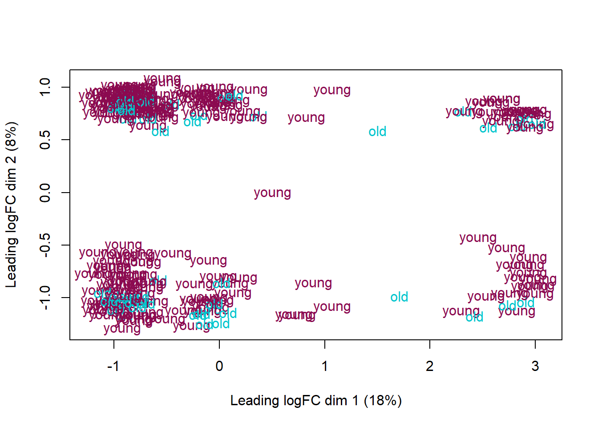
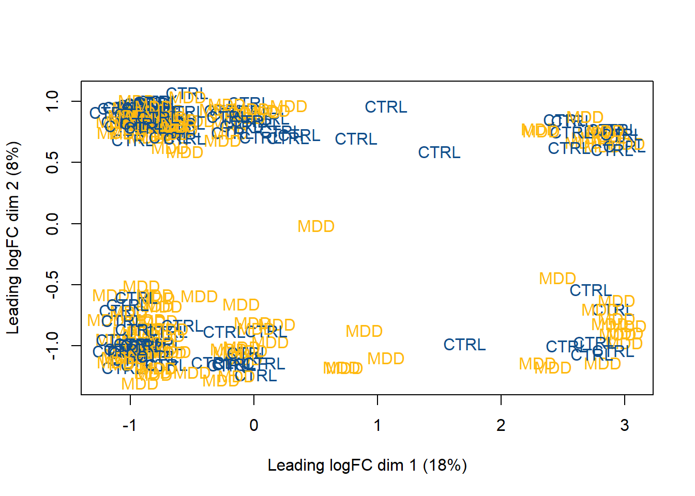
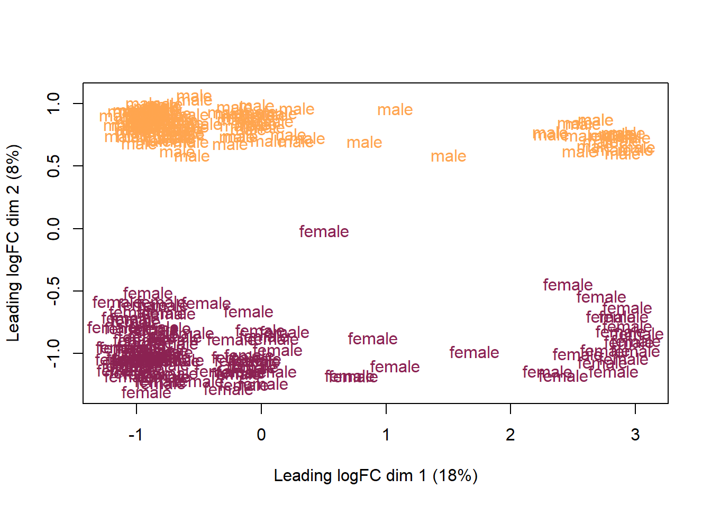
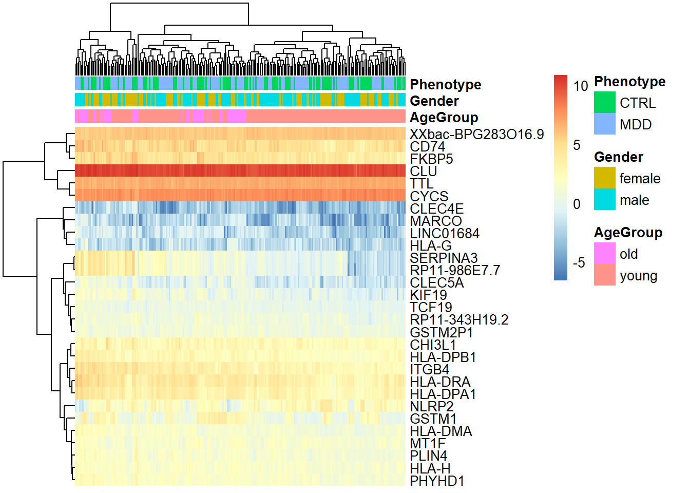

6 Expresión diferencial.
Para visualizar un poco los datos, se graficaron boxplots de algunas de los diferentes atributos, como el fenotipo y el grupo de edad, para analizar la diferencia entre la expresión de las muestras bajo distintas condiciones. Sin embargo, no se observaron diferencias muy significativas con este tipo de gráficas.
# Boxplot por grupo de edad
ggplot(as.data.frame(colData(rse_gene_SRP115956)), aes(y = assigned_gene_prop, x = age_group)) +
geom_boxplot() +
theme_bw(base_size = 20) +
ylab("Assigned Gene Prop") +
xlab("Age Group")
# Boxplot por fenotipo
ggplot(as.data.frame(colData(rse_gene_SRP115956)), aes(y = assigned_gene_prop, x = rse_gene_SRP115956$sra_attribute.phenotype)) +
geom_boxplot() +
theme_bw(base_size = 20) +
ylab("Assigned Gene Prop") +
xlab("Phenotype")
# Boxplot por género
ggplot(as.data.frame(colData(rse_gene_SRP115956)), aes(y = assigned_gene_prop, x = rse_gene_SRP115956$sra_attribute.gender)) +
geom_boxplot() +
theme_bw(base_size = 20) +
ylab("Assigned Gene Prop") +
xlab("Gender")
6.1 Modelo estadístico.
El modelo estadístico se generó a partir de las tres variables anteriormente mencionadas.
mod <- model.matrix(~ age_group + sra_attribute.gender + sra_attribute.phenotype + assigned_gene_prop, data = colData(rse_gene_SRP115956))
colnames(mod)## [1] "(Intercept)" "age_groupyoung"
## [3] "sra_attribute.gendermale" "sra_attribute.phenotypeMDD"
## [5] "assigned_gene_prop"Convertimos las lecturas de las cuentas a logaritmo base 2 de las cuentas por millón. Posteriormente estimamos la relación varianza-promedio.
vGene <- voom(dge, mod, plot = TRUE) Ajustamos los datos evaluando de acuerdo al atributo
Ajustamos los datos evaluando de acuerdo al atributo phenotype y podemos visualizar los datos estadísticos.
# Ajuste de los datos
eb_results <- eBayes(lmFit(vGene))
plotMA(eb_results, coef = 4, col = "steelblue")
de_results <- topTable(
eb_results,
coef = 2,
number = nrow(rse_gene_SRP115956),
sort.by = "none"
)
dim(de_results)## [1] 46977 16volcanoplot(eb_results, coef = 4, highlight = 5, names = de_results$gene_name, col = "steelblue", hl.col="hotpink4") En este último plot podemos observar los cinco genes con mayor expresión cuando el diagnóstico es Major Depressive Disorder están alejados de los demás, lo que nos da un indicativo de la expresión diferencial.
Siguiendo con el análisis, se observó si se generaban clusters de expresión diferencial dependiendo de la categoría de las muestras. Esto se consiguió a partir de gráficas MDS en las que visualizamos la agrupación de muestras de acuerdo a los valores y los niveles de expresión de las variables elegidas.De igual manera, se graficaron los atributos grupo de edad, fenotipo y género.
## Crear un data frame con las variables de nuestro interés y nombrarlas más amigablemente.
df <- as.data.frame(colData(rse_gene_SRP115956)[, c("age_group", "sra_attribute.gender", "sra_attribute.phenotype")])
colnames(df) <- c("AgeGroup", "Gender", "Phenotype")
# MDS por edad
age.group <- df$AgeGroup
levels(age.group) <- c("turquoise3", "deeppink4")
age.group <- as.character(age.group)
plotMDS(vGene$E, labels = df$AgeGroup, col = age.group)
# MDS por fenotipo
phenotype.group <- df$Phenotype
levels(phenotype.group) <- c("dodgerblue4", "darkgoldenrod1")
phenotype.group <- as.character(phenotype.group)
plotMDS(vGene$E, labels = df$Phenotype, col = phenotype.group)
# MDS por género.
gender.group <- df$Gender
levels(gender.group) <- c("violetred4", "tan1")
gender.group <- as.character(gender.group)
plotMDS(vGene$E, labels = df$Gender, col = gender.group)
La más informativa de estas gráficas es la que analiza la categoría de sexo. Podemos ver dos clusters en el caso de hombres y mujeres vemos que hay una gran diferencia en los genes diferencialmente expresados.
Por último podemos observar en una gráfica de tipo heatmap la expresión de los genes a lo largo de los atributos que se consideraron para generar el modelo.
# Nos quedamos con los genes de más significativos.
exprs_heatmap <- vGene$E[rank(de_results$adj.P.Val) <= 30, ]
# Cambiar los identificadores por los nombres de los genes.
nombres <- rownames(de_results)
rownames(exprs_heatmap) <- de_results$gene_name[match(rownames(exprs_heatmap), nombres)]
pheatmap(
exprs_heatmap,
cluster_rows = TRUE,
cluster_cols = TRUE,
show_rownames = TRUE,
show_colnames = FALSE,
annotation_col = df
)